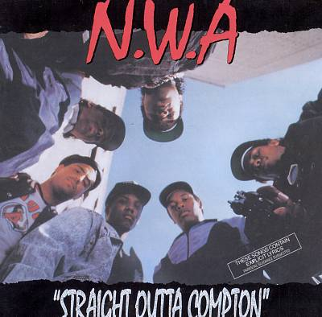

N.W.A was an American hip hop group from Compton (California) that is widely considered to have been among the earliest and most significant popularizers of the gangsta rap and West Coast hip hop subgenres while also being credited by many as one of the seminal groups in the history of hip hop music. Active from 1986 to 1991, the rap group endured controversy due to their music's explicit lyrics that many viewed as being disrespectful of women, as well as its glorification of drugs, and crime. The group was subsequently banned from many mainstream American radio stations. In spite of this, the group has sold over 10 million units in the United States alone. The group was also known for their deep hatred of the police system, which sparked much controversy over the years. The original lineup consisted of Dr. Dre, Eazy-E, and Ice Cube. MC Ren joined in 1988. Ice Cube left in December 1989 over royalty disputes. Several members would later become platinum-selling solo artists in the 1990s. Their debut album Straight Outta Compton marked the beginning of the new gangsta rap era as the production and social commentary in their lyrics were revolutionary within the genre. Rolling Stone ranked N.W.A number 83 on their list of the "100 Greatest Artists of All Time." In October 2012, N.W.A were nominated for induction into the Rock and Roll Hall of Fame for the first time. In October 2013 the group was nominated for a second time. -Wikipedia
